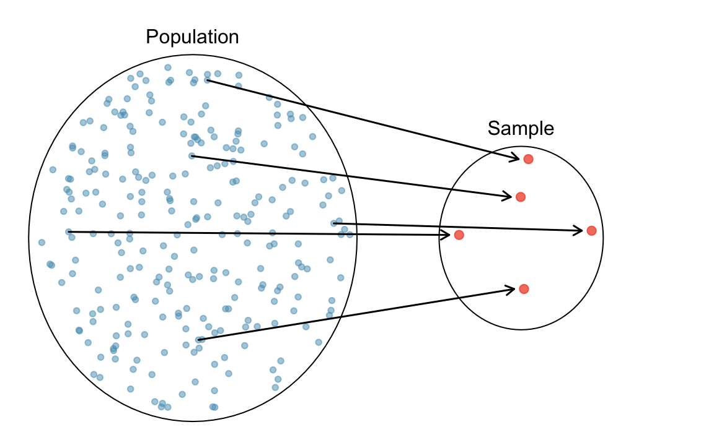
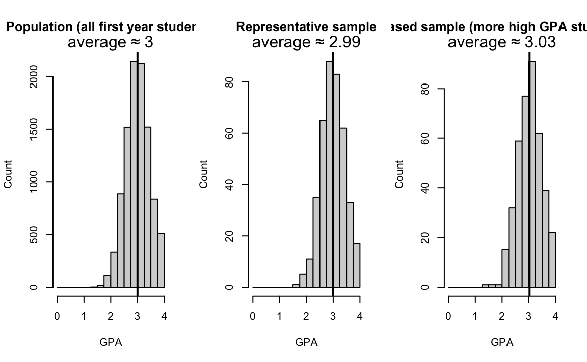
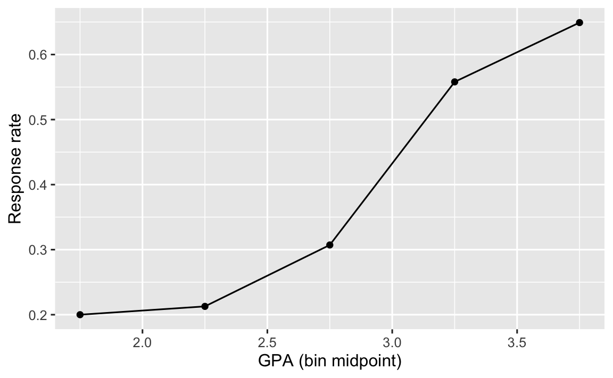
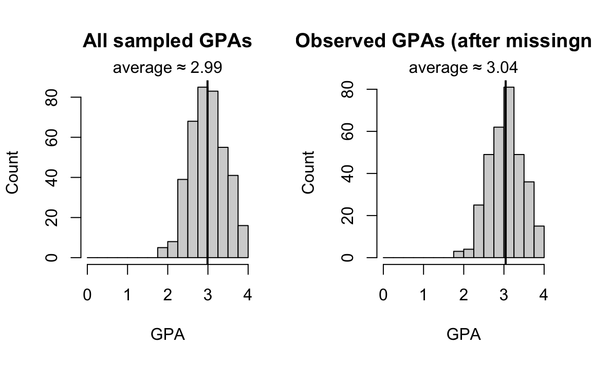
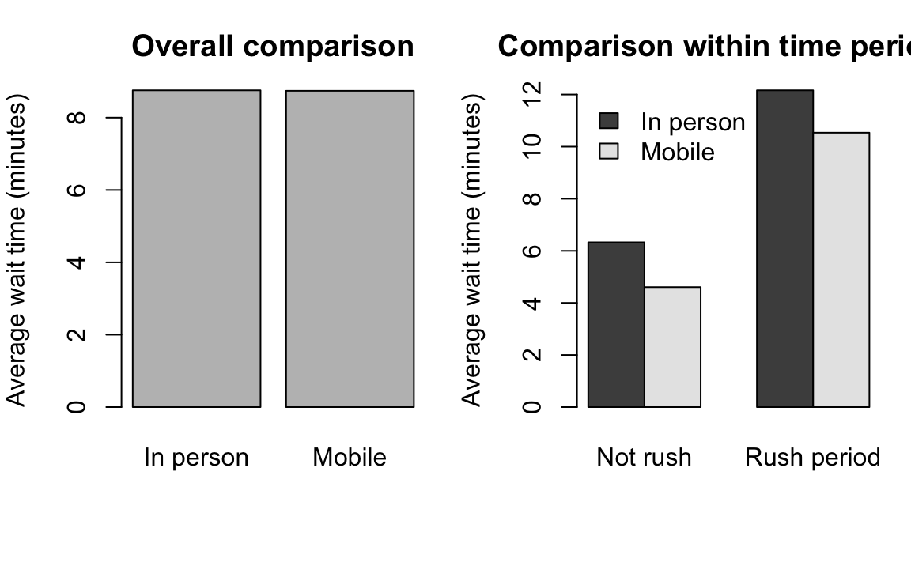

| order_id | order_time | pickup_time | wait_time_min | drink_type | mobile_order | satisfaction_1to10 | day_of_week |
|---|---|---|---|---|---|---|---|
| 101 | 08:12 | 08:19 | 7 | Latte | Yes | 8 | Mon |
| 102 | 08:15 | 08:25 | 10 | Cold brew | Yes | 6 | Mon |
| 103 | 08:18 | 08:27 | 9 | Tea | No | 7 | Mon |
| 104 | 09:05 | 09:12 | 7 | Latte | No | 8 | Tue |
| 105 | 09:10 | NA | NA | Espresso | Yes | NA | Tue |
| 106 | 12:02 | 12:08 | 6 | Tea | Yes | 9 | Wed |
| 107 | 12:05 | 12:21 | 16 | Latte | No | 4 | Wed |
| 108 | 15:41 | 15:47 | 6 | Cold brew | Yes | 8 | Thu |
2 Data: Meaning, Collection, and Types
In Chapter 1, we described statistics as a science of data. This chapter takes the next step by clarifying what we mean by data and how data enter statistical work.
2.1 What data mean in statistics
In everyday language, people use the word data to mean facts, numbers, or information. In statistics, data have a more specific meaning.
Data are recorded values, collected with a purpose, that represent information about individuals, objects, or events of interest.
Two details matter immediately.
Data are not only the values. Data also include context: who or what was measured, when and where the measurement happened, and how the measurement was taken.
Data come from a hypothesized process or mechanism that randomly produces data values. Even if the same procedure is repeated, the recorded values will typically vary. Statistics treats that variability as a central feature, not as an inconvenience.
2.1.1 Key terms
To make the coffee shop story concrete, suppose we want to understand two outcomes:
- How long students wait for a drink.
- Whether longer waits are associated with lower satisfaction.
To study this, we decide what the observational units are, what variables to record for each unit, and how to document those variables.
Observational unit (or case). The object being described in statistical studies. In the coffee shop story, an observational unit might be a single order, a single student visit, or a single hour, depending on how the data are defined and our research goal.
Variable. A characteristic or attribute recorded for each observational unit. A variable is a characteristic that can vary across units and across repetitions of data collection.
Data set. A collection of variables measured on a collection of observational units, together with documentation that explains what each variable means and how it was recorded.
Data dictionary (or codebook). A document that defines each variable, its units, allowed values, and any special codes for missing or unknown values.
2.1.1.1 Example data set from the coffee shop story
In this example, the observational unit is a single order. Each row is one order, and each column is a variable recorded for that order.
We usually store a data set in a matrix form that has rows and columns. Sometimes we call such data set data matrix or data frame. Each row corresponds to a unique observational unit. Each column represents a characteristic or variable. Each cell is the recorded value of one variable for one unit. This data matrix structure allows new cases to be added as rows or new variables to be added as columns.
How the terms connect in this example:
Observational unit: one coffee shop order
Variables:
wait_time_min,drink_type,mobile_order,satisfaction_1to10, and so onData set: the full table of orders and variables
Data dictionary: the documentation below that explains what each variable means
A data dictionary makes the data usable by other people and by your future self. It also reduces ambiguity, for example whether wait_time_min is measured from order submission or from payment time.
| variable | meaning | units | allowed_values | missing_codes |
|---|---|---|---|---|
| order_id | Unique identifier for each order | id | integer | NA |
| order_time | Time the order was placed | HH:MM | 00:00 to 23:59 | NA |
| pickup_time | Time the drink was marked ready for pickup | HH:MM | 00:00 to 23:59 | NA if pickup time not recorded |
| wait_time_min | Minutes from order_time to pickup_time | minutes | 0 to 60 (typical range for this shop) | NA if pickup_time is missing |
| drink_type | Main drink category for the order | category | Latte, Cold brew, Espresso, Tea, Other | NA |
| mobile_order | Whether the order was placed using the mobile app | Yes or No | Yes, No | NA |
| satisfaction_1to10 | Student rating of the experience for that order | 1 to 10 | 1 to 10 (integers) | NA if the student did not respond |
| day_of_week | Day of the week when the order was placed | category | Mon, Tue, Wed, Thu, Fri, Sat, Sun | NA |
In a model implied approach, the codebook matters because it tells us what the variables actually represent in the real world. If we misunderstand the measurement process, any statistical model built on these variables can answer the wrong question.
2.2 How data are generated
A useful way to think about data generation is to separate three layers.
- The real world process (people, behavior, systems)
- The measurement process (what gets recorded, with what instrument, with what rules)
- The data set you analyze (rows, columns, codes, and missing values)
A problem can enter at any layer. For example, a campus survey might have a well written question but a poor response rate, or it might have a high response rate but a confusing question.
2.2.1 Population and sample
A population is the larger group you want to learn about. A sample is the group you actually observe.
In the coffee shop story, several populations are possible.
- All coffee shop visits on campus this semester
- All student visits during weekday mornings
- All students who buy coffee on campus
The population should be defined by the question, not by convenience. The sample is determined by the collection method and practical constraints.

2.2.2 Representation and bias
A sample is most useful when it represents the population for the question being asked.
- Population means the full group you want to learn about.
- Sample means the smaller group you actually observe.
Representation is about whether the sample behaves like the population for the variables you care about.
Two common reasons a sample does not represent the population are:
- Selection bias. Some units are more likely to be included than others, in a way related to the variables of interest.
- Nonresponse or missingness. Some units are included, but some variables are not recorded, in a way related to the outcomes.
In model-based work, we treat selection and missingness as part of the data generating process: the data we observe are shaped by what happened in the world and by what we managed to record. If selection or missingness is severe, it can dominate any later modeling step.
2.2.2.1 Example 1: Coffee shop data (selection bias in practice)
In the coffee shop story, imagine the question is:
What is a typical wait time for all orders during the semester?
- Population for the question: all coffee shop orders between 8 am and 4 pm
- Convenient data source: the mobile ordering app log
If the app is used mostly during busy times (for example, right before class), then app orders can over represent rush periods. If we analyze only app orders, we can exaggerate the wait time compared with all orders. That is selection bias: the chance an order appears in our data is related to the outcome we care about (wait time).
2.2.2.2 Example 2: GPA data (a numeric example we can visualize)
Suppose the question is:
What is a typical GPA of first year students this semester?
A common summary for “typical” is the average (also called the mean): add the GPAs and divide by how many students you have.
- A representative sample (for example, a random sample from the registrar list) tends to reflect the population.
- A biased sample (for example, volunteers from an honors forum) can over represent higher GPAs.
The figure below uses a computer generated example to illustrate the idea. The exact numbers are not important. The pattern is the key.

Interpretation. The representative sample histogram tends to look like the population histogram. The biased sample histogram is shifted toward higher GPAs, so its average is higher. That difference is not a modeling issue. It is a data generation issue.
Example 3: Missingness (nonresponse can shift what you observe)
Now suppose you take a representative sample of students, but some students do not report their GPA. If students with lower GPAs are less likely to respond, then the GPAs you observe can be shifted upward, even though your original sampling plan was reasonable.
The figure below shows the same idea with a random sample where some GPAs become missing.

# average_all_sampled average_observed_only missing_rate
# 2.99 3.04 0.19
Interpretation. When missingness is related to GPA, the observed GPAs are not a fair reflection of the sampled GPAs. The average based only on observed values can be misleading.
Selection bias and missingness are not only technical details. They describe how the data were produced and recorded. If the observed data do not represent the population for the question, then even a sophisticated model can confidently answer the wrong question.
2.2.3 Sampling methods
When you cannot measure the whole population, you take a sample. The sampling method is part of the data generating process, because it determines which units enter the data set.
A useful sample usually comes from a probability sampling plan, meaning that units are selected by a random mechanism (so that selection is not driven by the outcome you care about). A key practical ingredient is the sampling frame, which is the list or process you use to reach units (for example, a registrar list, a list of dorm rooms, or a stream of students entering the dining hall).
Here are common sampling methods you will see in practice.
- Simple random sampling. Select units at random from the sampling frame, so each unit has the same chance of being selected.
- Stratified sampling. Divide the population into groups called strata (for example, class year), then sample within each group. This is useful when you want each group represented.
- Cluster sampling. Divide the population into clusters (for example, dorm buildings), randomly select clusters, then include units within selected clusters. This is useful when it is expensive to reach individuals scattered across campus.
- Systematic sampling. Select every kth unit from an ordered list or stream (for example, every 10th student who walks into the dining hall). This can work well if the ordering is not related to the outcome.
Non probability approaches such as convenience samples and voluntary response samples are common, but they often create selection bias because who gets included is related to variables of interest.
Types of Random Samples
As previously mentioned, many statistical methods are based on the randomness assumption. It’s important to understand what a random sample is and how to collect it. In a random sample, each member of a population is equally likely to be selected.
Simple Random Sample
For a simple random sample (SRS), every possible sample of sample size \(n\) has the same chance to be chosen.
- Example: If I were to sample 100 students from all 10,000 Marquette students, I would randomly assign each student a number (from 1 to 10,000) and then randomly select 100 numbers.


Stratified Random Sample
For stratified sampling, we subdivide the population into different subgroups (strata) that share the same characteristics, then draw a simple random sample from each subgroup. Stratified sampling has a property: Homogeneous within strata; Non-homogeneous between strata. (Figure 2.5)

- Example: Divide Marquette students into groups by colleges, then perform a SRS for each group (Figure 2.6). In this case, subjects within strata are homogeneous because people in the same stratum belong to the same college. Subjects are non-homogeneous between strata because students in one college is not a student in another college.

Cluster Sampling
For cluster sampling, divide the population into clusters, then randomly select some of those clusters, and then keep all the members from those selected clusters. Cluster sampling has a property: Homogeneous between clusters; Non-homogeneous within clusters (Figure 2.7). Clusters look similar each other, but members in a cluster are not very alike. They have different characteristics.

- Example: Study 4720 students’ drinking habits by dividing the students into 9 groups, and then randomly selecting 3 and interviewing all of the students in each of those clusters (Figure 2.8). Subjects are homogeneous between clusters because clusters are like random partitions, and each one is a representative subset of the entire population. Subjects are non-homogeneous within clusters because everyone has their own characteristics, and subjects are not divided based on any characteristic such as major or college.

2.3 How data are collected
Most introductory examples fall into one of these collection approaches.
2.3.1 Sample surveys
A sample survey collects data from a subset of a population, typically using a questionnaire or structured measurement plan.
Key design ideas include:
- A sampling frame that defines who can be selected
- A selection method, ideally involving randomization
- Clear measurement definitions and units
- A plan for handling nonresponse
2.3.2 Observational studies
An observational study records variables as they naturally occur, without assigning treatments or interventions. Observational studies are common in social science, public health, business analytics, and campus life.
In the coffee shop story, using transaction logs to compare wait times for mobile versus non mobile orders is observational unless orders were assigned by design. Students choose whether to use the app, and that choice may be related to other factors such as schedule or patience.
2.3.2.1 Confounding and why it matters
A confounder is a variable that is related to both:
- the explanatory variable you care about (for example, mobile ordering), and
- the outcome you measure (for example, wait time).
When confounding is present, a comparison between groups can mix together multiple effects.
In the coffee shop story, time of day is a natural confounder.
- Time of day affects wait time, because the rush period tends to be busier.
- Time of day can also be related to ordering method, because mobile ordering might be used more often right before class.
The figure below illustrates how this can mislead. We use simulated data to show a common pattern: overall, mobile orders can look slower, even if within the same time period mobile orders are faster. The point is the logic, not the exact numbers.
An average (also called the mean) is one way to describe a typical value: add the values and divide by how many values you have.

How to read the figure.
- The left panel compares all mobile orders to all in person orders, without paying attention to time of day.
- The right panel compares mobile versus in person orders within the same time period.
When time of day is a confounder, the overall comparison can reflect differences in who uses the app and when, not only the effect of mobile ordering.
What you can do about confounding.
- Design: run an experiment when possible (see the next section).
- Measurement: record likely confounders (time of day, day of week, store staffing), so you can compare more fairly.
- Summary: make stratified summaries like the right panel before making strong conclusions.
This is model implied because it encourages you to think explicitly about what variables drive the outcome and what variables determine who ends up in each group. Later chapters will build on this idea by treating the data as arising from a probabilistic model that includes the key variables you measure.
2.3.3 Experiments
An experiment assigns an intervention to units, such as a treatment, policy, or feature change, and then measures outcomes. Random assignment is a powerful tool because it helps separate the intervention effect from other differences between groups.
In a campus setting, a small experiment might randomly assign some time blocks to run the mobile ordering pilot, while keeping staffing levels comparable. Then the comparison of wait times has a clearer causal interpretation.
2.4 Data types
OK. We learn data collection and sampling methods. Now’s let’s learn some data types. Data type is about what values a variable can take and what operations make sense on those values. Data type shapes:
How you summarize a variable
What kinds of relationships you look for
What probability models are reasonable
Usually a statistical method is only for some type of data or variables. Knowing data types is important because it helps us choose the correct or appropriate statistical methods for analysis. It also helps us interprets the analysis result correctly. Figure 2.10 tells us everything about data type. We are going to learn each data type in the figure.

Categorical vs. Numerical Variables
A categorical variable provides non-numerical information which can be placed in one (and only one) category from two or more categories. Here are some examples.
- Gender (Male 👨, Female 👩, Trans 🏳️🌈)
- Class (Freshman, Sophomore, Junior, Senior, Graduate)
- Country (USA 🇺🇸, Canada 🇨🇦, UK 🇬🇧, Germany 🇩🇪, Japan 🇯🇵, Korea 🇰🇷)
Gender, Class, and Country are all categorical variables because they provide non-numerical information. Their possible “values” are “categories”. Keep in mind that a data object can only belong to one category of that variable. You cannot be a freshman and sophomore.
A numerical variable is recorded in a numerical value representing counts or measurements. Some examples are
- GPA
- The number of relationships you’ve had
- Height
The possible values of the three variables are all numerical or numbers. You are a 6’2” tall student who had eight girlfriends and your GPA is 3.98.
Numerical Variables
Numerical variables can be discrete or continuous. A discrete variable takes on values of a finite or countable number, while a continuous variable takes on values anywhere over a particular range without gaps or jumps.
GPA is continuous because theoretically it can be any value between 0 and 4.
The number of relationships you’ve had is discrete because you can count the number and it is finite. The possible values are 0, 1, 2, 3, and so on. Can you have a 0.5 relationship?
Height is continuous because it can be any number within a range.
Categorical Variables
For convenience, categorical variables are usually recorded as numbers in a data set. For example, we can have
Gender (Male = 0, Female = 1, Trans = 2)
Class (Freshman = 1, Sophomore = 2, Junior = 3, Senior = 4, Graduate = 5)
Country (USA = 100, Canada = 101, UK = 200, Germany = 201, Japan = 300, Korea = 301)
Even United Airlines boarding group is categorical. The group number does provide non-numerical information, which is the order of boarding. You cannot be in both boarding zone one and zone two for the same ticket. You can only be in one group.
Please note that the numbers represent categories only; taking differences of these numbers is meaningless. If we use the coding scheme in the examples,
- Canada - USA = 101 - 100 = 1???
- Graduate - Sophomore = 5 - 2 = 3 = Junior???
The arithmetic operations do not make sense. For any data or variables, we need to learn the level of measurements to know which arithmetic operations are meaningful for what type of data.
Levels of Measurements
Nominal and Ordinal for Categorical Variables
A categorical variable can be of nominal or ordinal level of measurement.
The data is nominal if can not be ordered in a meaningful or natural way. For example,
Gender (Male = 0, Female = 1, Trans = 2) is nominal because Male, Female and Trans cannot be ordered, even the numbering coding has an ordering.
Country (USA = 100, Canada = 101, UK = 200, Germany = 201, Japan = 300, Korea = 301) is nominal. There is no reason to put any country before any other country unless there is another variable giving those countries another attribute that can be ordered.
Ordinal data can be arranged in some meaningful order, but differences between data values can NOT be determined or are meaningless.
- Class (Freshman = 1, Sophomore = 2, Junior = 3, Senior = 4, Graduate = 5) is ordinal because Sophomore is one class higher than Freshman, and so on. Here the difference is still meaningless. It seems that Junior is one year higher than Sophomore, and Junior - Sophomore = 1 kind of makes sense. However, “1” does not mean one year higher; instead “1” means Freshman. Moreover, we could even use the numbering (Freshman = 1, Sophomore = 10, Junior = 33, Senior = 44, Graduate = 50) for the Class variable.
Interval and Ratio for Numerical Variables
Numerical data can be interval or ratio level of measurement.
Interval data have meaningful differences between any two values but the data do NOT have a natural zero or starting point. The data can do \(\color{red} +\) and \(\color{red} -\), but can’t reasonably do \(\color{red} \times\) and \(\color{red} \div\).
- Temperature is interval because \(80^{\circ}\)F is 40 degrees higher than \(40^{\circ}\)F \((80-40=40)\), but \(0^{\circ}\) does not mean NO heat or NO temperature, but a specific temperature. Also, \(80^{\circ}\)F is NOT twice as hot as \(40^{\circ}\)F.
Ratio data have both meaningful differences and ratios, and there is a natural zero starting point that indicates none of the quantity. The data can do \(\color{red} +\), \(\color{red} -\), \(\color{red} \times\) and \(\color{red} \div\).
- Distance is ratio level of measurement because \(80\) miles is twice as far as \(40\) miles \((80/40 = 2)\), and \(0\) mile means NO distance.
Data type depends on decisions
Sometimes research purpose we may want to convert a numerical variable into a categorical variable. Figure 2.11 is an example of turning a 100% percentage grade into a letter grade which is categorical. Another is example is turning annual salary (numerical) into income level (categorical). We can say salary between $0 and $50,000 is “low” income level, salary between $50,000 and $120,000 is “middle” income level, and above $120,000 is “high” income level.
| Grade | Percentage |
|---|---|
| A | [94, 100] |
| A- | [90, 94) |
| B+ | [87, 90) |
| B | [83, 87) |
| B- | [80, 83) |
| C+ | [77, 80) |
| C | [73, 77) |
| C- | [70, 73) |
| D+ | [65, 70) |
| D | [60, 65) |
| F | [0, 60) |
The same underlying idea can be recorded in different ways.
A rating of 1 to 5 is ordinal categorical, but you might treat it as quantitative when computing an average. That choice has consequences.
Age can be recorded as a number, or grouped into categories. Grouping can simplify summaries, but it discards information.
A continuous measurement can be rounded to an integer, which changes the type and may change the model.
Good practice is to document these decisions and to align them with the goals of the analysis.
2.4.1 Common data types and model building blocks
Later chapters will introduce probability models carefully. For now, it is enough to see the connection between variable type and the kind of randomness we might model.
| Variable type | Example | A common probability model family |
|---|---|---|
| Binary categorical | mobile order yes or no | Bernoulli or Binomial |
| Nominal categorical | residence hall | Categorical or Multinomial |
| Ordinal categorical | rating 1 to 5 | Ordered categorical models |
| Count | items purchased | Poisson or Negative Binomial |
| Continuous | wait time | Normal, log normal, or other continuous models |
| Proportion | fraction of correct answers | Binomial or Beta type models |
2.5 Practice
2.6 Chapter summary
In this chapter, you learned how statisticians interpret data and why data meaning and data generation matter.
- Data are recorded values with context and purpose
- A data set has observational units and variables, supported by documentation
- Data are generated by a real world process and a measurement process
- Collection approaches include surveys, observational studies, and experiments
- Common sampling methods include simple random sampling, stratified sampling, cluster sampling, and systematic sampling.
- Data types guide both summaries and later probability modeling
2.7 Where we are going next
Chapter 3 and 4 set up the computing tools you need for doing data analysis. Chapter 5 and 6 focus on summarizing one variable at a time. You will learn how to use graphs and numerical summaries to describe patterns and variability, and how those summaries prepare you for model-based inference later in the book.
2.8 Exercises
- Data Type: Identify each of the following as numerical or categorical data.
- The names of the companies that manufacture paper towels
- The colors of cars
- The heights of football players
- Level of Measurements: Identify the level of measurement used in each of the following.
- The weights of people in a sample of people living in Milwaukee.
- A physician’s descriptions of “abstains from smoking, light smoker, moderate smoker, heavy smoker.”
- Flower classifications of “rose, tulip, daisy.”
- Suzy measures time in days, with 0 corresponding to her birth date. The day before her birth is -1, the day after her birth is +1, and so on. Suzy has converted the dates of major historical events to her numbering system. What is the level of measurement of these numbers?
- Discrete vs Continuous: Determine whether the data are discrete or continuous.
- The length of stay (in days) for each COVID patient in Wisconsin.
- Several subjects are randomly selected and their heights are recorded.
- From a data set, we see that a male had an arm circumference of 31.28 cm.
- A sample of married couples is randomly selected and the number of animals in each family is recorded.
- Sampling Method: Identify which of these types of sampling is used: random, stratified, or cluster.
- Dr. Yu surveys his statistics class by identifying groups of males and females, then randomly selecting 7 students from each of those two groups.
- Dr. Yu conducts a survey by randomly selecting 5 different sports teams at Marquette and surveying all of the student-athletes on those teams.
- 427 subjects were randomly assigned to (1) meditation or (2) no mediation group to study the effectiveness of this mindfulness activity on lowering blood pressure.
- Study Type: Determine whether the study is an experiment or an observational study, then identify a major problem with this study.
- In a survey conducted by USA Today, 998 Internet users chose to respond to the question:“How often do you seek medical advice online?” 42% of the respondents said “frequently.”
- The Physicians’ Health Study involved 21,045 female physicians. Based on random selections, 11,224 of them were treated with aspirin and other other 9,821 were given placebos. The study was stopped early because it became clear that aspirin did not reduce the risk of myocardial infarctions by a substantial amount.